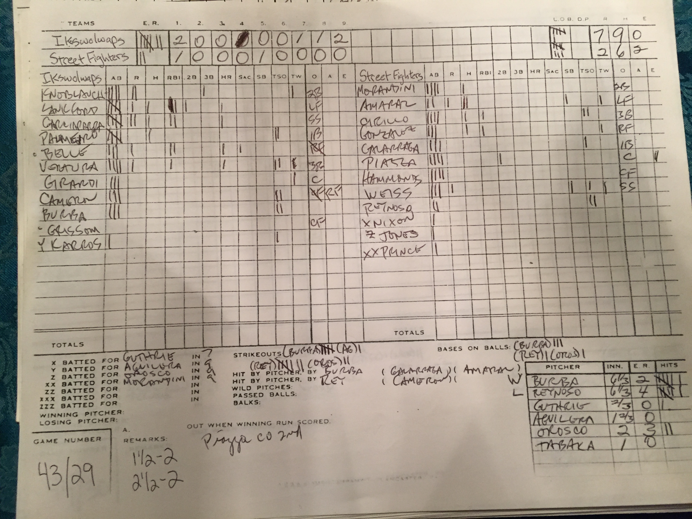
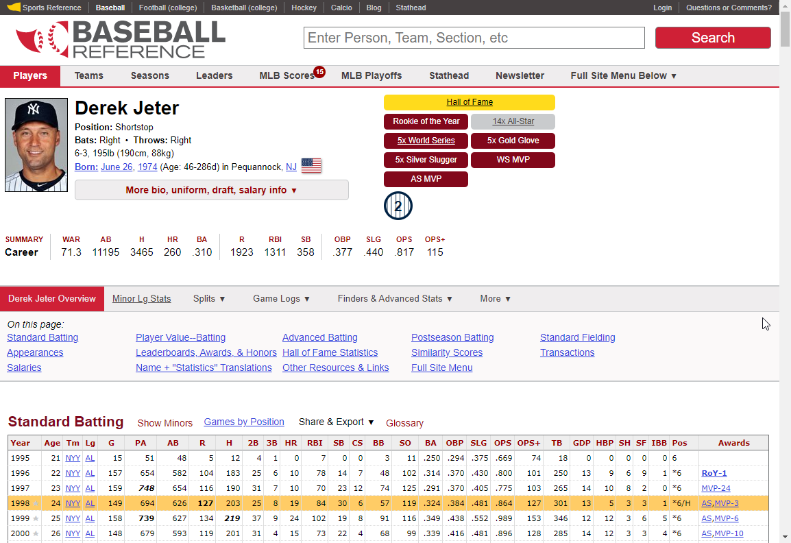
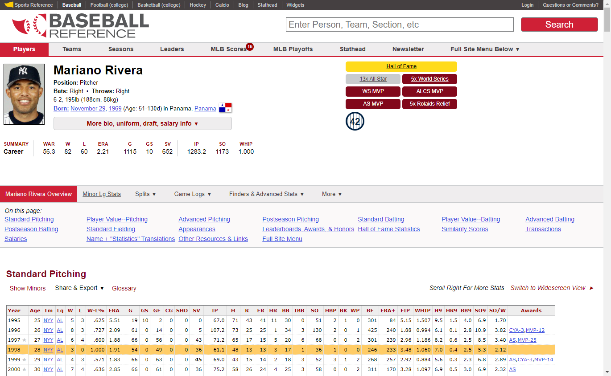

Chapter 2 Data sources
Our data sources are:
- Scoresheets from approximately 100 games of APBA Baseball
- Real-life statistics www.baseball-reference.com

Above is a picture of an APBA baseball scoresheet. The top half of the scoresheet is dedicated to hitting. Left and right sides of the top half of the scoresheet show the starting lineups for the visiting and home teams respectively as well as any substitutes that came into the game. For each player, hitting statistics such as atbats, runs, hits, etc. are recorded whenever the player gets a chance to hit. Similarly, the bottom half of the scoresheet is dedicated to pitching.
Using the statistics from about 100 of these scoresheets, we used Excel to create a spreadsheet to keep track of all the hitting and pitching statistics from all of the APBA baseball games. We had one tab in the spreadsheet for hitting and one tab in the spreadsheet for pitching.
This was a bit of a painstaking process. For each scoresheet, we would look at each player’s name, find that player’s name in the Excel sheet (or add the player’s name to the Excel sheet if it wasn’t there), increment each statistic in the Excel sheet with the player’s performance from the scoresheet, and repeat this process for every player in every scoresheet.
In order to extract the data needed from Baseball Reference, we performed web scraping to pull the batting and pitching data in the year 1998 for the players that appear in the 100 games of APBA Baseball.
First, we check if it is allowed to scrape the Baseball Reference website using the robotstxt package.
paths_allowed('https://www.baseball-reference.com')## [1] TRUE2.1 Batting Table
In order to obtain the real-life batting statistics for each individual player, we choose to scrape the Standard Batting table on the Baseball Reference website for each individual player. The entire list of players can be found in this folder. For example, the batting stats for Derek Jeter can be found at this link. Since we only want data for 1998 season, the row of Year 1998 in the Standard Batting table is our target.

Using the rvest package, we can locate this particular row of data with html_nodes() by passing the condition xpath = '//*[@id="batting_standard.1998"]/td'. The column names are stored in the html_attr('data-stat'), and the row values can be extracted using html_text().
2.2 Pitching Table
Similar to the Standard Batting table, we can extract the 1998 season pitching statistics from the Standard Pitching table. Below is an example of the Baseball Reference page for Mariano Rivera.

This time, we can locate the row of pitching data with html_nodes() by passing the condition xpath = '//*[@id="pitching_standard.1998"]/td'. The column names are stored in the html_attr('data-stat'), and the row values can be extracted using html_text().
After changing the numeric columns to the appropriate data type, we save the raw real-life batting and pitching data in this folder.